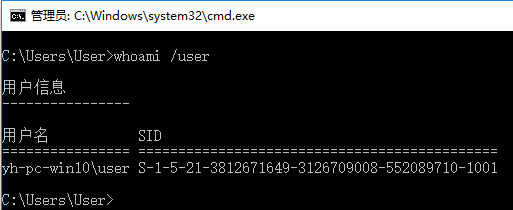
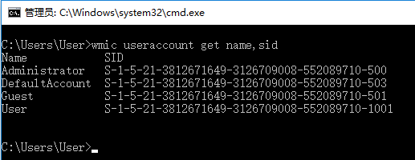
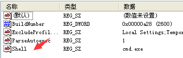

简介
当进入到WINDOWS操作系统后，系统会启动一个SHELL程序，也就是 explorer.exe 程序，
当我们创建、激活、关闭某个窗口时，explorer.exe 就会捕捉到对应消息，然后更新任务栏状态，
这其中捕捉消息的方法，就是使用了 ShellHook 技术。
替换SHELL程序
进入操作系统后，首先启动的这个SHELL程序，可以通过修改注册表的方式进行更换，
首先需要获取准备替换的账户的 SID 信息，在获取 管理员权限 的情况下启动 CMD 命令行，
运行 whoami /user 可以获取到当前登录账户的 SID 信息。

在XP系统中 whoami 工具没有默认被安装上，我们还可以借助于 WMI 来进行查询，
运行 wmic useraccount get name,sid 查询 账户名称 和对应的 SID 信息。

如果修改当前用户的SHELL启动程序，可以直接在注册表编辑器中，依照如下路径所示
1 | HKEY_USERS/(SID)/Softwares/Microsoft/Windows NT/CurrentVersion/Winlogon |
上边的(SID)就是当前用户的SID，创建名称为 Shell 的 字符串 值，内容设置为 cmd.exe

注销当前用户，并重新登录时，就会在初始运行 cmd.exe 程序。
如果注册表中没有某账户的SID信息，可以使用 runas /user:hello notepad.exe 指令，
即使用 hello 账户运行 notepad.exe 程序，注意不要关闭该 notepad.exe 程序，然后
注册表中就会出现 hello 账户的SID信息。
ShellHook实现
注册 ShellHook 的流程，首先需要使用 RegisterWindowMessage 函数注册 SHELLHOOK 消息，
然后使用 RegisterShellHookWindow 关联用来接收和处理SHELLHOOK消息的窗口。
1 | UINT WM_SHELLHOOKMESSAGE; // 自定义消息 |
窗口回调函数和SHELLHOOK消息的处理代码，如下所示
1 | LRESULT CALLBACK WndProc(HWND hWnd, UINT uMsg, WPARAM wParam, LPARAM lParam) |
关于ShellHook可以监控的消息的更多解释见如下链接：
https://docs.microsoft.com/en-us/windows/win32/api/winuser/nf-winuser-registershellhookwindow
注意事项
经测试发现，使用 ShellHook 只能抓取 最上层 窗口句柄，比如在 本地连接 属性 窗口里，点击
打开 Internet 协议 (TCP/IP) 属性 子窗口，而 ShellHook 始终只展示 本地连接 属性 窗口。